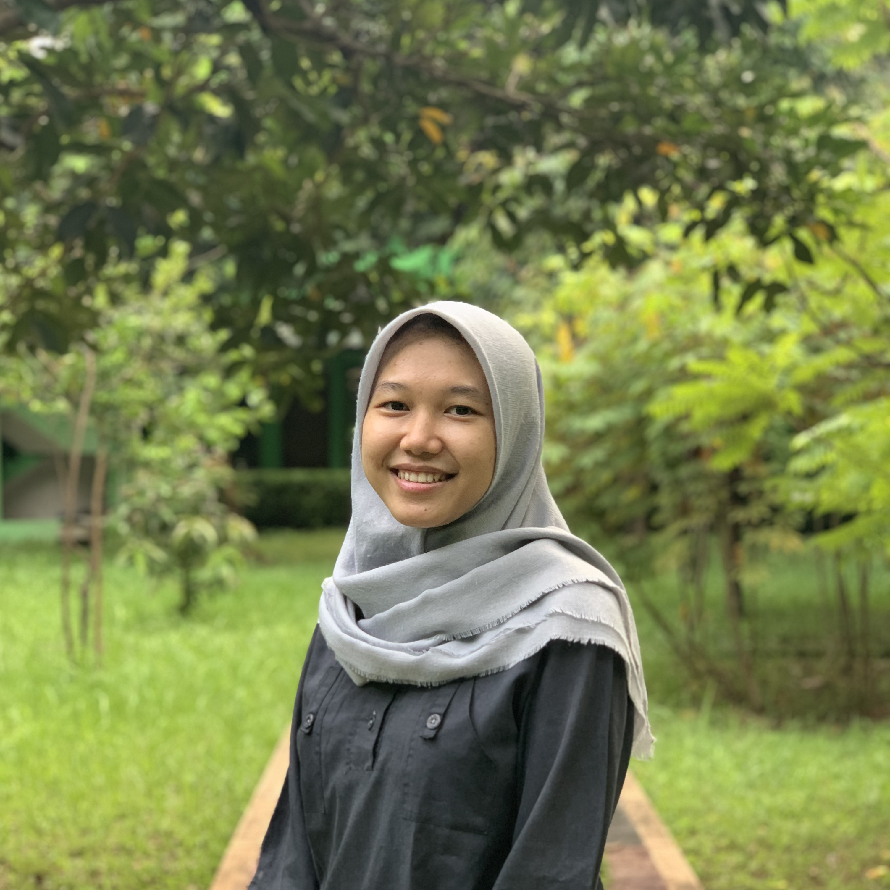

clips üçÉ
Asian Scientist Magazine
Corals Punish Selfish Algae
Probing the Ocean Before the Storm
Tracking Cannabinoids Abuse
For more stories, here is my author page.
Journal of Young Investigators
The Life of Science Journalist Turned Community Founder: An Interview with The Open Notebook’s Siri Carpenter
Researchers Mapped Out Potential Impurities in Drug Products
Safeguarding People from Harmful Medicines
Press Release: Shedding Light on Protein Activities
A New Test Strip Is Able to Satiate SARS-CoV-2’s Sugar Craving
Press Release: The Journal of Young Investigators Officially Rolls Out Editorials
Streamlining Clinical Trials to Make Them Work for Everyone: A Conversation with Dr. Heidi Gardner
Press Release: Computer-Based System Leverages Quality of Care in Parkinson’s Disease Patients
Press Release: RNA Strand Variations Dictate Plant’s Behavior to Greet the Changing Season
New Target Associate Specific Drug Levels Within Race Against Cancer
Microneedles: Simplifying the Delivery of High-dose, High-frequency Therapies
Peer-reviewed publications
Anti-Diabetes Mellitus Potential of Flavonoid Compounds in Citrus Peel: A Review
on Mechanism of Action
The Bumbling Biochemist (translation work)
Perbedaan Tipe Uji Covid-19
Info Astronomy (translation work)
Hujan Meteor Orionid di Langit Mongolia
Pelangi Ekstra di Langit New Jersey
Tabrakan Kosmis Menciptakan Cincin Galaksi
Aurora di Kutub Utara Saturnus
Bintang Variabel Cepheid RS Pup
Meteor di depan Galaksi
Gerhana Bulan dan Mars di Pegunungan
Final Kompetisi Fermi Science
Awan Noktilusen di atas Kembang Api Paris
Loreng Harimau di Enseladus
Bulan Terbenam di balik Gunung Berapi Teide
Aurora dan Kawah Manicouagan dari ISS
Animasi Awan Jupiter dari Juno
Korona Gerhana Matahari Total dalam HDF
Bintik Merah Besar Jupiter yang Menyusut
dataviz üêö
26 Years of JYI's News, Features, and Careers Articles as Colorful Mutant Flowers
Sparkling Stars: Short Tales of Southeast Asia's Aspirations - EU-ASEAN Competition
bio üíä

I'm a pharmacist who also dabble in science writing and dataviz. Though the three profession/interests don’t seem to relate to each other, I always strive to showcase human narratives driving scientific discoveries and put community front and center in my projects. Previously I wrote for Asian Scientist Magazine and Journal of Young Investigators. I like to snorkel whenever I can. For my sound travel advice and unfiltered thoughts, visit my Medium. And for my book reviews, visit my Goodreads.
Interested to collaborate or just looking for a snorkeling bud? Get in touch!
üìß septiaa.nurmala@gmail.com
 @septia_nurmala2
@septia_nurmala2
 Septia Nurmala
Septia Nurmala